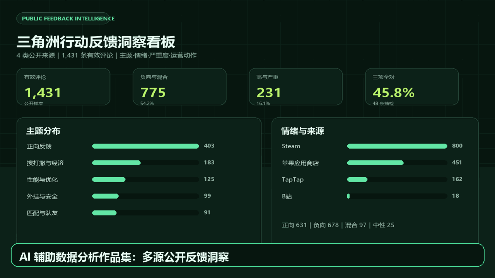

项目亮点
- 覆盖 Steam、苹果应用商店、TapTap 与 B站公开评论，记录采集时间、来源链接和平台限制。
- 建立 12 类主题、4 类情绪、4 级严重度和运营动作分类，保留命中词与置信度。
- 输出单文件交互式看板、周报、案例研究、分类标准和人工验证报告。
- 用户名和头像不进入数据，作者仅保留不可逆短哈希。
从四类公开来源采集真实玩家评论，完成匿名化、标准化、主题分类、情绪与严重度评估、人工抽检、运营建议和离线看板。项目重点不只是“用了 AI”，而是展示 AI 如何进入一条可验证的数据分析工作流。
AI：方案拆解、代码草稿、规则辅助、报告初稿、一致性检查。
人：来源边界、隐私判断、分类标准、48 条人工抽检、最终结论。

48 条分层抽检结果：主题一致率 81.3%，情绪一致率 66.7%，严重度一致率 75.0%，三项全对率 45.8%。典型误差包括复合长评主主题冲突、反讽表达、跨语言短评和否定句。
计划升级：接入大模型零样本分类对照，增加独立第二标注者，报告宏平均 F1、成本和耗时；同时部署在线看板和演示视频。